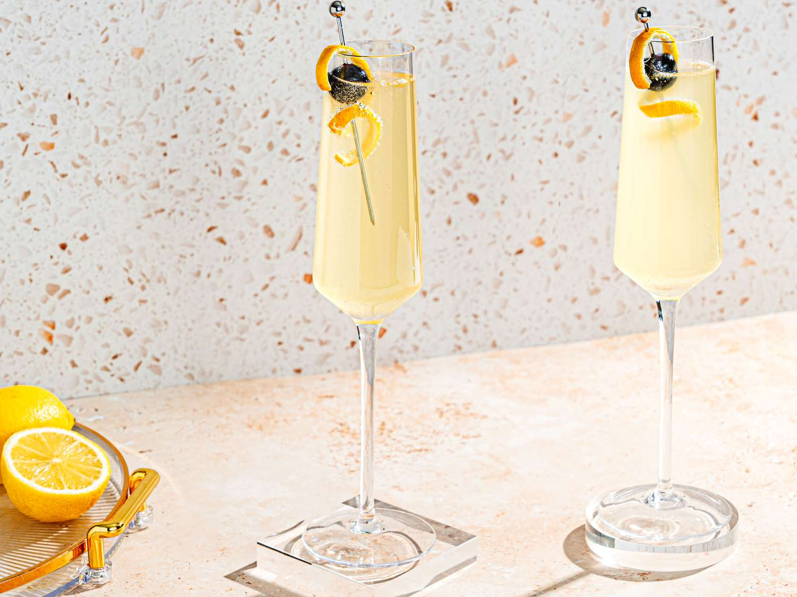

French 75
프렌치 75
#크루즈 #클래식 #새콤한 #약간의 탄산 #적당한 도수

Ingredients
- 진 30ml
- 레몬 주스 15ml
- 설탕 시럽 10ml
- 샴페인 60ml
- 얼음 100g
Recipe
- 먼저, 쉐이커에 얼음을 채워줍니다.
- 진 30ml, 레몬 주스 15ml, 설탕 시럽 10ml를 넣습니다.
- 쉐이커를 잘 흔들어 재료를 섞어줍니다.
- 혼합물을 스트레이너를 사용해 칵테일 잔에 따릅니다.
- 마지막으로 샴페인 60ml를 조심스럽게 부어줍니다.
History
진 베이스 칵테일로, ‘다이아몬드 피즈’라고도 불립니다. 현재 IBA 공식 칵테일에 등록되어 있는 레시피 중 하나입니다.
프렌치 75(French 75)샴페인으로 만드는 유니크한 프랑스풍 피즈 프랑스 75번이라는 독특한 명칭의 칵테일이며 제1차 세계 대전 도중인 1915년에 프랑스 파리에 있는 '해리의 뉴욕 바'에서 처음 선보였습니다. 명칭은 당시 프랑스군의 주력 대포로서 독일군의 진격을 저지한 일등공신이었던 1897년식 75mm 야포에서 유래했다고 합니다.
이상한 이름과는 반대로, 아름다운 다이아몬드 피즈라는 별명이 붙어 있는데, 샴페인을 사용해서 피즈와 비슷한 느낌이 나기 때문에 그런 이름이 붙었다고 합니다. 동일한 이름의 칵테일에 버본을 베이스로 한 프렌치95, 브랜디를 베이스로 한 프렌치125가 있으며, 그 중에서 가장 인기있는 것이 이 75번입니다.